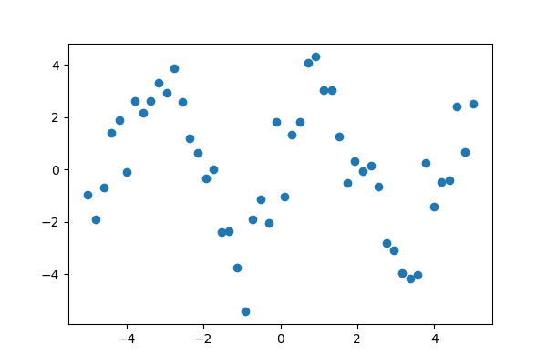
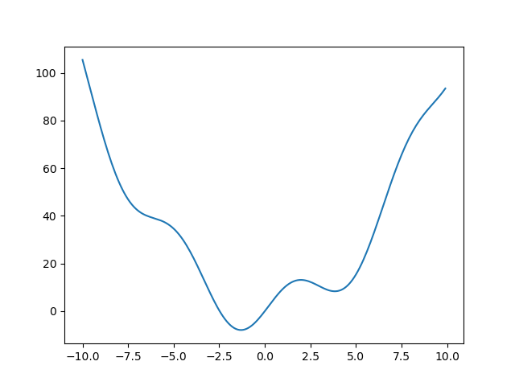
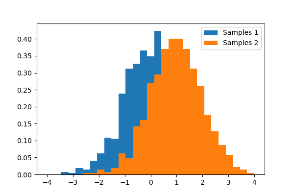
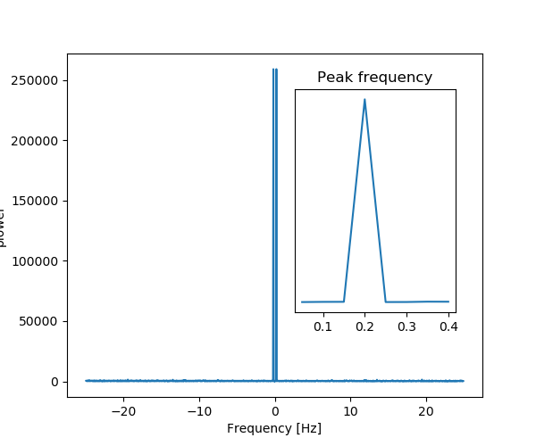

1.6. Scipy : high-level scientific computing¶
Authors: Gaël Varoquaux, Adrien Chauve, Andre Espaze, Emmanuelle Gouillart, Ralf Gommers
Scipy
The scipy package contains various toolboxes dedicated to common
issues in scientific computing. Its different submodules correspond
to different applications, such as interpolation, integration,
optimization, image processing, statistics, special functions, etc.
Tip
scipy can be compared to other standard scientific-computing
libraries, such as the GSL (GNU Scientific Library for C and C++),
or Matlab’s toolboxes. scipy is the core package for scientific
routines in Python; it is meant to operate efficiently on numpy
arrays, so that numpy and scipy work hand in hand.
Before implementing a routine, it is worth checking if the desired
data processing is not already implemented in Scipy. As
non-professional programmers, scientists often tend to re-invent the
wheel, which leads to buggy, non-optimal, difficult-to-share and
unmaintainable code. By contrast, Scipy’s routines are optimized
and tested, and should therefore be used when possible.
Chapters contents
- File input/output:
scipy.io - Special functions:
scipy.special - Linear algebra operations:
scipy.linalg - Interpolation:
scipy.interpolate - Optimization and fit:
scipy.optimize - Statistics and random numbers:
scipy.stats - Numerical integration:
scipy.integrate - Fast Fourier transforms:
scipy.fftpack - Signal processing:
scipy.signal - Image manipulation:
scipy.ndimage - Summary exercises on scientific computing
- Full code examples for the scipy chapter
Warning
This tutorial is far from an introduction to numerical computing.
As enumerating the different submodules and functions in scipy would
be very boring, we concentrate instead on a few examples to give a
general idea of how to use scipy for scientific computing.
scipy is composed of task-specific sub-modules:
scipy.cluster |
Vector quantization / Kmeans |
scipy.constants |
Physical and mathematical constants |
scipy.fftpack |
Fourier transform |
scipy.integrate |
Integration routines |
scipy.interpolate |
Interpolation |
scipy.io |
Data input and output |
scipy.linalg |
Linear algebra routines |
scipy.ndimage |
n-dimensional image package |
scipy.odr |
Orthogonal distance regression |
scipy.optimize |
Optimization |
scipy.signal |
Signal processing |
scipy.sparse |
Sparse matrices |
scipy.spatial |
Spatial data structures and algorithms |
scipy.special |
Any special mathematical functions |
scipy.stats |
Statistics |
Tip
They all depend on numpy, but are mostly independent of each
other. The standard way of importing Numpy and these Scipy modules
is:
>>> import numpy as np
>>> from scipy import stats # same for other sub-modules
The main scipy namespace mostly contains functions that are really
numpy functions (try scipy.cos is np.cos). Those are exposed for
historical reasons; there’s no reason to use import
scipy in your code.
1.6.1. File input/output: scipy.io¶
Matlab files: Loading and saving:
>>> from scipy import io as spio
>>> a = np.ones((3, 3))
>>> spio.savemat('file.mat', {'a': a}) # savemat expects a dictionary
>>> data = spio.loadmat('file.mat')
>>> data['a']
array([[1., 1., 1.],
[1., 1., 1.],
[1., 1., 1.]])
Warning
Python / Matlab mismatches, eg matlab does not represent 1D arrays
>>> a = np.ones(3)
>>> a
array([1., 1., 1.])
>>> spio.savemat('file.mat', {'a': a})
>>> spio.loadmat('file.mat')['a']
array([[1., 1., 1.]])
Notice the difference?
Image files: Reading images:
>>> import imageio
>>> imageio.imread('fname.png')
Array(...)
>>> # Matplotlib also has a similar function
>>> import matplotlib.pyplot as plt
>>> plt.imread('fname.png')
array(...)
See also
- Load text files:
numpy.loadtxt()/numpy.savetxt() - Clever loading of text/csv files:
numpy.genfromtxt()/numpy.recfromcsv() - Fast and efficient, but numpy-specific, binary format:
numpy.save()/numpy.load() - More advanced input/output of images in scikit-image:
skimage.io
1.6.2. Special functions: scipy.special¶
Special functions are transcendental functions. The docstring of the
scipy.special module is well-written, so we won’t list all
functions here. Frequently used ones are:
- Bessel function, such as
scipy.special.jn()(nth integer order Bessel function)- Elliptic function (
scipy.special.ellipj()for the Jacobian elliptic function, …)- Gamma function:
scipy.special.gamma(), also notescipy.special.gammaln()which will give the log of Gamma to a higher numerical precision.- Erf, the area under a Gaussian curve:
scipy.special.erf()
1.6.3. Linear algebra operations: scipy.linalg¶
Tip
The scipy.linalg module provides standard linear algebra
operations, relying on an underlying efficient implementation (BLAS,
LAPACK).
The
scipy.linalg.det()function computes the determinant of a square matrix:>>> from scipy import linalg >>> arr = np.array([[1, 2], ... [3, 4]]) >>> linalg.det(arr) -2.0 >>> arr = np.array([[3, 2], ... [6, 4]]) >>> linalg.det(arr) 0.0 >>> linalg.det(np.ones((3, 4))) Traceback (most recent call last): ... ValueError: expected square matrix
The
scipy.linalg.inv()function computes the inverse of a square matrix:>>> arr = np.array([[1, 2], ... [3, 4]]) >>> iarr = linalg.inv(arr) >>> iarr array([[-2. , 1. ], [ 1.5, -0.5]]) >>> np.allclose(np.dot(arr, iarr), np.eye(2)) True
Finally computing the inverse of a singular matrix (its determinant is zero) will raise
LinAlgError:>>> arr = np.array([[3, 2], ... [6, 4]]) >>> linalg.inv(arr) Traceback (most recent call last): ... ...LinAlgError: singular matrix
More advanced operations are available, for example singular-value decomposition (SVD):
>>> arr = np.arange(9).reshape((3, 3)) + np.diag([1, 0, 1]) >>> uarr, spec, vharr = linalg.svd(arr)
The resulting array spectrum is:
>>> spec array([14.88982544, 0.45294236, 0.29654967])
The original matrix can be re-composed by matrix multiplication of the outputs of
svdwithnp.dot:>>> sarr = np.diag(spec) >>> svd_mat = uarr.dot(sarr).dot(vharr) >>> np.allclose(svd_mat, arr) True
SVD is commonly used in statistics and signal processing. Many other standard decompositions (QR, LU, Cholesky, Schur), as well as solvers for linear systems, are available in
scipy.linalg.
1.6.4. Interpolation: scipy.interpolate¶
scipy.interpolate is useful for fitting a function from experimental
data and thus evaluating points where no measure exists. The module is based
on the FITPACK Fortran subroutines.
By imagining experimental data close to a sine function:
>>> measured_time = np.linspace(0, 1, 10)
>>> noise = (np.random.random(10)*2 - 1) * 1e-1
>>> measures = np.sin(2 * np.pi * measured_time) + noise
scipy.interpolate.interp1d can build a linear interpolation
function:
>>> from scipy.interpolate import interp1d
>>> linear_interp = interp1d(measured_time, measures)
Then the result can be evaluated at the time of interest:
>>> interpolation_time = np.linspace(0, 1, 50)
>>> linear_results = linear_interp(interpolation_time)
A cubic interpolation can also be selected by providing the kind optional
keyword argument:
>>> cubic_interp = interp1d(measured_time, measures, kind='cubic')
>>> cubic_results = cubic_interp(interpolation_time)
scipy.interpolate.interp2d is similar to
scipy.interpolate.interp1d, but for 2-D arrays. Note that for
the interp family, the interpolation points must stay within the range
of given data points. See the summary exercise on
Maximum wind speed prediction at the Sprogø station for a more advanced spline
interpolation example.
1.6.5. Optimization and fit: scipy.optimize¶
Optimization is the problem of finding a numerical solution to a minimization or equality.
Tip
The scipy.optimize module provides algorithms for function
minimization (scalar or multi-dimensional), curve fitting and root
finding.
>>> from scipy import optimize
1.6.5.1. Curve fitting¶
Suppose we have data on a sine wave, with some noise:
>>> x_data = np.linspace(-5, 5, num=50)
>>> y_data = 2.9 * np.sin(1.5 * x_data) + np.random.normal(size=50)
If we know that the data lies on a sine wave, but not the amplitudes or the period, we can find those by least squares curve fitting. First we have to define the test function to fit, here a sine with unknown amplitude and period:
>>> def test_func(x, a, b):
... return a * np.sin(b * x)
We then use scipy.optimize.curve_fit() to find  and
and  :
:
>>> params, params_covariance = optimize.curve_fit(test_func, x_data, y_data, p0=[2, 2])
>>> print(params)
[3.05931973 1.45754553]
Exercise: Curve fitting of temperature data
The temperature extremes in Alaska for each month, starting in January, are given by (in degrees Celcius):
max: 17, 19, 21, 28, 33, 38, 37, 37, 31, 23, 19, 18 min: -62, -59, -56, -46, -32, -18, -9, -13, -25, -46, -52, -58
- Plot these temperature extremes.
- Define a function that can describe min and max temperatures. Hint: this function has to have a period of 1 year. Hint: include a time offset.
- Fit this function to the data with
scipy.optimize.curve_fit().- Plot the result. Is the fit reasonable? If not, why?
- Is the time offset for min and max temperatures the same within the fit accuracy?
1.6.5.2. Finding the minimum of a scalar function¶
Let’s define the following function:
>>> def f(x):
... return x**2 + 10*np.sin(x)
and plot it:
>>> x = np.arange(-10, 10, 0.1)
>>> plt.plot(x, f(x))
>>> plt.show()
This function has a global minimum around -1.3 and a local minimum around 3.8.
Searching for minimum can be done with
scipy.optimize.minimize(), given a starting point x0, it returns
the location of the minimum that it has found:
>>> result = optimize.minimize(f, x0=0)
>>> result
fun: -7.9458233756...
hess_inv: array([[0.0858...]])
jac: array([-1.19209...e-06])
message: 'Optimization terminated successfully.'
nfev: 18
nit: 5
njev: 6
status: 0
success: True
x: array([-1.30644...])
>>> result.x # The coordinate of the minimum
array([-1.30644...])
Methods: As the function is a smooth function, gradient-descent based methods are good options. The lBFGS algorithm is a good choice in general:
>>> optimize.minimize(f, x0=0, method="L-BFGS-B")
fun: array([-7.94582338])
hess_inv: <1x1 LbfgsInvHessProduct with dtype=float64>
jac: array([-1.42108547e-06])
message: ...'CONVERGENCE: NORM_OF_PROJECTED_GRADIENT_<=_PGTOL'
nfev: 12
nit: 5
status: 0
success: True
x: array([-1.30644013])
Note how it cost only 12 functions evaluation above to find a good value for the minimum.
Global minimum: A possible issue with this approach is that, if the function has local minima, the algorithm may find these local minima instead of the global minimum depending on the initial point x0:
>>> res = optimize.minimize(f, x0=3, method="L-BFGS-B")
>>> res.x
array([3.83746709])
If we don’t know the neighborhood of the global minimum to choose the
initial point, we need to resort to costlier global optimization. To
find the global minimum, we use scipy.optimize.basinhopping()
(added in version 0.12.0 of Scipy). It combines a local optimizer with
sampling of starting points:
>>> optimize.basinhopping(f, 0)
nfev: 1725
minimization_failures: 0
fun: -7.9458233756152845
x: array([-1.30644001])
message: ['requested number of basinhopping iterations completed successfully']
njev: 575
nit: 100
Note
scipy used to contain the routine anneal, it has been removed in
SciPy 0.16.0.
Constraints:
We can constrain the variable to the interval
(0, 10) using the “bounds” argument:
>>> res = optimize.minimize(f, x0=1,
... bounds=((0, 10), ))
>>> res.x
array([0.])
Tip
What has happened? Why are we finding 0, which is not a mimimum of our function.
Minimizing functions of several variables
To minimize over several variables, the trick is to turn them into a function of a multi-dimensional variable (a vector). See for instance the exercise on 2D minimization below.
Note
scipy.optimize.minimize_scalar() is a function with dedicated
methods to minimize functions of only one variable.
See also
Finding minima of function is discussed in more details in the advanced chapter: Mathematical optimization: finding minima of functions.
Exercise: 2-D minimization

The six-hump camelback function
has multiple global and local minima. Find the global minima of this function.
Hints:
- Variables can be restricted to
and
.
- Use
numpy.meshgrid()andmatplotlib.pyplot.imshow()to find visually the regions.- Use
scipy.optimize.minimize(), optionally trying out several of its methods.How many global minima are there, and what is the function value at those points? What happens for an initial guess of
?

1.6.5.3. Finding the roots of a scalar function¶
To find a root, i.e. a point where  , of the function
, of the function  above
we can use
above
we can use scipy.optimize.root():
>>> root = optimize.root(f, x0=1) # our initial guess is 1
>>> root # The full result
fjac: array([[-1.]])
fun: array([0.])
message: 'The solution converged.'
nfev: 10
qtf: array([1.33310463e-32])
r: array([-10.])
status: 1
success: True
x: array([0.])
>>> root.x # Only the root found
array([0.])
Note that only one root is found. Inspecting the plot of reveals that
there is a second root around -2.5. We find the exact value of it by adjusting
our initial guess:
>>> root2 = optimize.root(f, x0=-2.5)
>>> root2.x
array([-2.47948183])
Note
scipy.optimize.root() also comes with a variety of algorithms,
set via the “method” argument.
Now that we have found the minima and roots of f and used curve fitting on it,
we put all those results together in a single plot:
See also
You can find all algorithms and functions with similar functionalities
in the documentation of scipy.optimize.
See the summary exercise on Non linear least squares curve fitting: application to point extraction in topographical lidar data for another, more advanced example.
1.6.6. Statistics and random numbers: scipy.stats¶
The module scipy.stats contains statistical tools and probabilistic
descriptions of random processes. Random number generators for various
random process can be found in numpy.random.
1.6.6.1. Distributions: histogram and probability density function¶
Given observations of a random process, their histogram is an estimator of the random process’s PDF (probability density function):
>>> samples = np.random.normal(size=1000)
>>> bins = np.arange(-4, 5)
>>> bins
array([-4, -3, -2, -1, 0, 1, 2, 3, 4])
>>> histogram = np.histogram(samples, bins=bins, density=True)[0]
>>> bins = 0.5*(bins[1:] + bins[:-1])
>>> bins
array([-3.5, -2.5, -1.5, -0.5, 0.5, 1.5, 2.5, 3.5])
>>> from scipy import stats
>>> pdf = stats.norm.pdf(bins) # norm is a distribution object
>>> plt.plot(bins, histogram)
[<matplotlib.lines.Line2D object at ...>]
>>> plt.plot(bins, pdf)
[<matplotlib.lines.Line2D object at ...>]
If we know that the random process belongs to a given family of random processes, such as normal processes, we can do a maximum-likelihood fit of the observations to estimate the parameters of the underlying distribution. Here we fit a normal process to the observed data:
>>> loc, std = stats.norm.fit(samples)
>>> loc
-0.045256707...
>>> std
0.9870331586...
Exercise: Probability distributions
Generate 1000 random variates from a gamma distribution with a shape parameter of 1, then plot a histogram from those samples. Can you plot the pdf on top (it should match)?
Extra: the distributions have many useful methods. Explore them by
reading the docstring or by using tab completion. Can you recover
the shape parameter 1 by using the fit method on your random
variates?
1.6.6.2. Mean, median and percentiles¶
The mean is an estimator of the center of the distribution:
>>> np.mean(samples)
-0.0452567074...
The median another estimator of the center. It is the value with half of the observations below, and half above:
>>> np.median(samples)
-0.0580280347...
Tip
Unlike the mean, the median is not sensitive to the tails of the distribution. It is “robust”.
Exercise: Compare mean and median on samples of a Gamma distribution
Which one seems to be the best estimator of the center for the Gamma distribution?
The median is also the percentile 50, because 50% of the observation are below it:
>>> stats.scoreatpercentile(samples, 50)
-0.0580280347...
Similarly, we can calculate the percentile 90:
>>> stats.scoreatpercentile(samples, 90)
1.2315935511...
Tip
The percentile is an estimator of the CDF: cumulative distribution function.
1.6.6.3. Statistical tests¶
A statistical test is a decision indicator. For instance, if we have two sets of observations, that we assume are generated from Gaussian processes, we can use a T-test to decide whether the means of two sets of observations are significantly different:
>>> a = np.random.normal(0, 1, size=100)
>>> b = np.random.normal(1, 1, size=10)
>>> stats.ttest_ind(a, b)
(array(-3.177574054...), 0.0019370639...)
Tip
The resulting output is composed of:
- The T statistic value: it is a number the sign of which is proportional to the difference between the two random processes and the magnitude is related to the significance of this difference.
- the p value: the probability of both processes being identical. If it is close to 1, the two process are almost certainly identical. The closer it is to zero, the more likely it is that the processes have different means.
See also
The chapter on statistics introduces much more elaborate tools for statistical testing and statistical data loading and visualization outside of scipy.
1.6.7. Numerical integration: scipy.integrate¶
1.6.7.1. Function integrals¶
The most generic integration routine is scipy.integrate.quad(). To
compute  :
:
>>> from scipy.integrate import quad
>>> res, err = quad(np.sin, 0, np.pi/2)
>>> np.allclose(res, 1) # res is the result, is should be close to 1
True
>>> np.allclose(err, 1 - res) # err is an estimate of the err
True
Other integration schemes are available:
scipy.integrate.fixed_quad(), scipy.integrate.quadrature(),
scipy.integrate.romberg()…
1.6.7.2. Integrating differential equations¶
scipy.integrate also features routines for integrating Ordinary
Differential Equations (ODE). In
particular, scipy.integrate.odeint() solves ODE of the form:
dy/dt = rhs(y1, y2, .., t0,...)
As an introduction, let us solve the ODE  between
between
 , with the initial condition
, with the initial condition  .
First the function computing the derivative of the position needs to be defined:
.
First the function computing the derivative of the position needs to be defined:
>>> def calc_derivative(ypos, time):
... return -2 * ypos
Then, to compute y as a function of time:
>>> from scipy.integrate import odeint
>>> time_vec = np.linspace(0, 4, 40)
>>> y = odeint(calc_derivative, y0=1, t=time_vec)
Let us integrate a more complex ODE: a damped
spring-mass oscillator.
The position of a mass attached to a spring obeys the 2nd order ODE
 with
with
 with
with  the spring constant,
the spring constant,  the mass
and
the mass
and  with
with  the damping coefficient. We set:
the damping coefficient. We set:
>>> mass = 0.5 # kg
>>> kspring = 4 # N/m
>>> cviscous = 0.4 # N s/m
Hence:
>>> eps = cviscous / (2 * mass * np.sqrt(kspring/mass))
>>> omega = np.sqrt(kspring / mass)
The system is underdamped, as:
>>> eps < 1
True
For odeint(), the 2nd order equation
needs to be transformed in a system of two first-order equations for the
vector  : the function computes the
velocity and acceleration:
: the function computes the
velocity and acceleration:
>>> def calc_deri(yvec, time, eps, omega):
... return (yvec[1], -2.0 * eps * omega * yvec[1] - omega **2 * yvec[0])
Integration of the system follows:
>>> time_vec = np.linspace(0, 10, 100)
>>> yinit = (1, 0)
>>> yarr = odeint(calc_deri, yinit, time_vec, args=(eps, omega))
Tip
scipy.integrate.odeint() uses the LSODA (Livermore Solver for
Ordinary Differential equations with Automatic method switching for stiff
and non-stiff problems), see the ODEPACK Fortran library for more
details.
1.6.8. Fast Fourier transforms: scipy.fftpack¶
The scipy.fftpack module computes fast Fourier transforms (FFTs)
and offers utilities to handle them. The main functions are:
scipy.fftpack.fft()to compute the FFTscipy.fftpack.fftfreq()to generate the sampling frequenciesscipy.fftpack.ifft()computes the inverse FFT, from frequency space to signal space
As an illustration, a (noisy) input signal (sig), and its FFT:
>>> from scipy import fftpack
>>> sig_fft = fftpack.fft(sig)
>>> freqs = fftpack.fftfreq(sig.size, d=time_step)
 |
 |
|---|---|
| Signal | FFT |
As the signal comes from a real function, the Fourier transform is symmetric.
The peak signal frequency can be found with freqs[power.argmax()]

Setting the Fourrier component above this frequency to zero and inverting
the FFT with scipy.fftpack.ifft(), gives a filtered signal.
Note
The code of this example can be found here
numpy.fft
Numpy also has an implementation of FFT (numpy.fft). However,
the scipy one
should be preferred, as it uses more efficient underlying implementations.
Fully worked examples:
| Crude periodicity finding (link) | Gaussian image blur (link) |
|---|---|
 |
 |
Exercise: Denoise moon landing image

- Examine the provided image
moonlanding.png, which is heavily contaminated with periodic noise. In this exercise, we aim to clean up the noise using the Fast Fourier Transform. - Load the image using
matplotlib.pyplot.imread(). - Find and use the 2-D FFT function in
scipy.fftpack, and plot the spectrum (Fourier transform of) the image. Do you have any trouble visualising the spectrum? If so, why? - The spectrum consists of high and low frequency components. The noise is contained in the high-frequency part of the spectrum, so set some of those components to zero (use array slicing).
- Apply the inverse Fourier transform to see the resulting image.
1.6.9. Signal processing: scipy.signal¶
Tip
scipy.signal is for typical signal processing: 1D,
regularly-sampled signals.
Resampling scipy.signal.resample(): resample a signal to n
points using FFT.
>>> t = np.linspace(0, 5, 100)
>>> x = np.sin(t)
>>> from scipy import signal
>>> x_resampled = signal.resample(x, 25)
>>> plt.plot(t, x)
[<matplotlib.lines.Line2D object at ...>]
>>> plt.plot(t[::4], x_resampled, 'ko')
[<matplotlib.lines.Line2D object at ...>]
Tip
Notice how on the side of the window the resampling is less accurate and has a rippling effect.
This resampling is different from the interpolation provided by scipy.interpolate as it
only applies to regularly sampled data.

Detrending scipy.signal.detrend(): remove linear trend from signal:
>>> t = np.linspace(0, 5, 100)
>>> x = t + np.random.normal(size=100)
>>> from scipy import signal
>>> x_detrended = signal.detrend(x)
>>> plt.plot(t, x)
[<matplotlib.lines.Line2D object at ...>]
>>> plt.plot(t, x_detrended)
[<matplotlib.lines.Line2D object at ...>]
Filtering:
For non-linear filtering, scipy.signal has filtering (median
filter scipy.signal.medfilt(), Wiener scipy.signal.wiener()),
but we will discuss this in the image section.
Tip
scipy.signal also has a full-blown set of tools for the design
of linear filter (finite and infinite response filters), but this is
out of the scope of this tutorial.
Spectral analysis:
scipy.signal.spectrogram() compute a spectrogram –frequency
spectrums over consecutive time windows–, while
scipy.signal.welch() comptes a power spectrum density (PSD).

1.6.10. Image manipulation: scipy.ndimage¶
scipy.ndimage provides manipulation of n-dimensional arrays as
images.
1.6.10.1. Geometrical transformations on images¶
Changing orientation, resolution, ..
>>> from scipy import misc # Load an image
>>> face = misc.face(gray=True)
>>> from scipy import ndimage # Shift, roate and zoom it
>>> shifted_face = ndimage.shift(face, (50, 50))
>>> shifted_face2 = ndimage.shift(face, (50, 50), mode='nearest')
>>> rotated_face = ndimage.rotate(face, 30)
>>> cropped_face = face[50:-50, 50:-50]
>>> zoomed_face = ndimage.zoom(face, 2)
>>> zoomed_face.shape
(1536, 2048)

>>> plt.subplot(151)
<matplotlib.axes._subplots.AxesSubplot object at 0x...>
>>> plt.imshow(shifted_face, cmap=plt.cm.gray)
<matplotlib.image.AxesImage object at 0x...>
>>> plt.axis('off')
(-0.5, 1023.5, 767.5, -0.5)
>>> # etc.
1.6.10.2. Image filtering¶
Generate a noisy face:
>>> from scipy import misc
>>> face = misc.face(gray=True)
>>> face = face[:512, -512:] # crop out square on right
>>> import numpy as np
>>> noisy_face = np.copy(face).astype(np.float)
>>> noisy_face += face.std() * 0.5 * np.random.standard_normal(face.shape)
Apply a variety of filters on it:
>>> blurred_face = ndimage.gaussian_filter(noisy_face, sigma=3)
>>> median_face = ndimage.median_filter(noisy_face, size=5)
>>> from scipy import signal
>>> wiener_face = signal.wiener(noisy_face, (5, 5))

Other filters in scipy.ndimage.filters and scipy.signal
can be applied to images.
Exercise
Compare histograms for the different filtered images.
1.6.10.3. Mathematical morphology¶
Tip
Mathematical morphology stems from set theory. It characterizes and transforms geometrical structures. Binary (black and white) images, in particular, can be transformed using this theory: the sets to be transformed are the sets of neighboring non-zero-valued pixels. The theory was also extended to gray-valued images.

Mathematical-morphology operations use a structuring element in order to modify geometrical structures.
Let us first generate a structuring element:
>>> el = ndimage.generate_binary_structure(2, 1)
>>> el
array([[False, True, False],
[...True, True, True],
[False, True, False]])
>>> el.astype(np.int)
array([[0, 1, 0],
[1, 1, 1],
[0, 1, 0]])
Erosion
scipy.ndimage.binary_erosion()>>> a = np.zeros((7, 7), dtype=np.int) >>> a[1:6, 2:5] = 1 >>> a array([[0, 0, 0, 0, 0, 0, 0], [0, 0, 1, 1, 1, 0, 0], [0, 0, 1, 1, 1, 0, 0], [0, 0, 1, 1, 1, 0, 0], [0, 0, 1, 1, 1, 0, 0], [0, 0, 1, 1, 1, 0, 0], [0, 0, 0, 0, 0, 0, 0]]) >>> ndimage.binary_erosion(a).astype(a.dtype) array([[0, 0, 0, 0, 0, 0, 0], [0, 0, 0, 0, 0, 0, 0], [0, 0, 0, 1, 0, 0, 0], [0, 0, 0, 1, 0, 0, 0], [0, 0, 0, 1, 0, 0, 0], [0, 0, 0, 0, 0, 0, 0], [0, 0, 0, 0, 0, 0, 0]]) >>> #Erosion removes objects smaller than the structure >>> ndimage.binary_erosion(a, structure=np.ones((5,5))).astype(a.dtype) array([[0, 0, 0, 0, 0, 0, 0], [0, 0, 0, 0, 0, 0, 0], [0, 0, 0, 0, 0, 0, 0], [0, 0, 0, 0, 0, 0, 0], [0, 0, 0, 0, 0, 0, 0], [0, 0, 0, 0, 0, 0, 0], [0, 0, 0, 0, 0, 0, 0]])
Dilation
scipy.ndimage.binary_dilation()>>> a = np.zeros((5, 5)) >>> a[2, 2] = 1 >>> a array([[0., 0., 0., 0., 0.], [0., 0., 0., 0., 0.], [0., 0., 1., 0., 0.], [0., 0., 0., 0., 0.], [0., 0., 0., 0., 0.]]) >>> ndimage.binary_dilation(a).astype(a.dtype) array([[0., 0., 0., 0., 0.], [0., 0., 1., 0., 0.], [0., 1., 1., 1., 0.], [0., 0., 1., 0., 0.], [0., 0., 0., 0., 0.]])
Opening
scipy.ndimage.binary_opening()>>> a = np.zeros((5, 5), dtype=np.int) >>> a[1:4, 1:4] = 1 >>> a[4, 4] = 1 >>> a array([[0, 0, 0, 0, 0], [0, 1, 1, 1, 0], [0, 1, 1, 1, 0], [0, 1, 1, 1, 0], [0, 0, 0, 0, 1]]) >>> # Opening removes small objects >>> ndimage.binary_opening(a, structure=np.ones((3, 3))).astype(np.int) array([[0, 0, 0, 0, 0], [0, 1, 1, 1, 0], [0, 1, 1, 1, 0], [0, 1, 1, 1, 0], [0, 0, 0, 0, 0]]) >>> # Opening can also smooth corners >>> ndimage.binary_opening(a).astype(np.int) array([[0, 0, 0, 0, 0], [0, 0, 1, 0, 0], [0, 1, 1, 1, 0], [0, 0, 1, 0, 0], [0, 0, 0, 0, 0]])
Closing:
scipy.ndimage.binary_closing()
Exercise
Check that opening amounts to eroding, then dilating.
An opening operation removes small structures, while a closing operation fills small holes. Such operations can therefore be used to “clean” an image.
>>> a = np.zeros((50, 50))
>>> a[10:-10, 10:-10] = 1
>>> a += 0.25 * np.random.standard_normal(a.shape)
>>> mask = a>=0.5
>>> opened_mask = ndimage.binary_opening(mask)
>>> closed_mask = ndimage.binary_closing(opened_mask)

Exercise
Check that the area of the reconstructed square is smaller than the area of the initial square. (The opposite would occur if the closing step was performed before the opening).
For gray-valued images, eroding (resp. dilating) amounts to replacing a pixel by the minimal (resp. maximal) value among pixels covered by the structuring element centered on the pixel of interest.
>>> a = np.zeros((7, 7), dtype=np.int)
>>> a[1:6, 1:6] = 3
>>> a[4, 4] = 2; a[2, 3] = 1
>>> a
array([[0, 0, 0, 0, 0, 0, 0],
[0, 3, 3, 3, 3, 3, 0],
[0, 3, 3, 1, 3, 3, 0],
[0, 3, 3, 3, 3, 3, 0],
[0, 3, 3, 3, 2, 3, 0],
[0, 3, 3, 3, 3, 3, 0],
[0, 0, 0, 0, 0, 0, 0]])
>>> ndimage.grey_erosion(a, size=(3, 3))
array([[0, 0, 0, 0, 0, 0, 0],
[0, 0, 0, 0, 0, 0, 0],
[0, 0, 1, 1, 1, 0, 0],
[0, 0, 1, 1, 1, 0, 0],
[0, 0, 3, 2, 2, 0, 0],
[0, 0, 0, 0, 0, 0, 0],
[0, 0, 0, 0, 0, 0, 0]])
1.6.10.4. Connected components and measurements on images¶
Let us first generate a nice synthetic binary image.
>>> x, y = np.indices((100, 100))
>>> sig = np.sin(2*np.pi*x/50.) * np.sin(2*np.pi*y/50.) * (1+x*y/50.**2)**2
>>> mask = sig > 1


scipy.ndimage.label() assigns a different label to each connected
component:
>>> labels, nb = ndimage.label(mask)
>>> nb
8
Now compute measurements on each connected component:
>>> areas = ndimage.sum(mask, labels, range(1, labels.max()+1))
>>> areas # The number of pixels in each connected component
array([190., 45., 424., 278., 459., 190., 549., 424.])
>>> maxima = ndimage.maximum(sig, labels, range(1, labels.max()+1))
>>> maxima # The maximum signal in each connected component
array([ 1.80238238, 1.13527605, 5.51954079, 2.49611818, 6.71673619,
1.80238238, 16.76547217, 5.51954079])

Extract the 4th connected component, and crop the array around it:
>>> ndimage.find_objects(labels==4)
[(slice(30L, 48L, None), slice(30L, 48L, None))]
>>> sl = ndimage.find_objects(labels==4)
>>> from matplotlib import pyplot as plt
>>> plt.imshow(sig[sl[0]])
<matplotlib.image.AxesImage object at ...>
See the summary exercise on Image processing application: counting bubbles and unmolten grains for a more advanced example.
1.6.11. Summary exercises on scientific computing¶
The summary exercises use mainly Numpy, Scipy and Matplotlib. They provide some real-life examples of scientific computing with Python. Now that the basics of working with Numpy and Scipy have been introduced, the interested user is invited to try these exercises.
Exercises:
Proposed solutions:
1.6.12. Full code examples for the scipy chapter¶


{kind=link}
1.6.12.18. Solutions of the exercises for scipy¶
Gallery generated by Sphinx-Gallery
See also
References to go further
- Some chapters of the advanced and the packages and applications parts of the scipy lectures
- The scipy cookbook